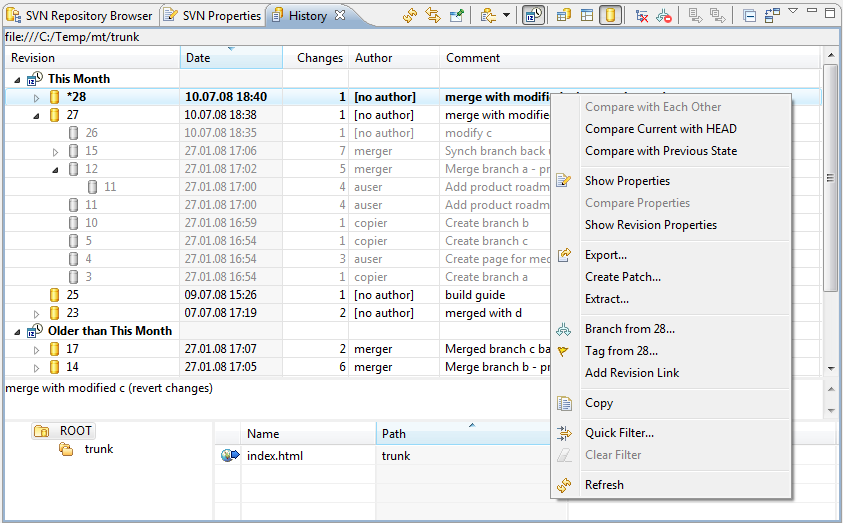

|
|
|
 'SVN History View'
provides information on a history of resource change. The user can simply watch the change history, open editor on a specified revision, load a revision, revert the workspace to the revision. If the Subversion server and client versions used is 1.5 then the
revisions, which took part in the previous merges of this resource are shown as children of the main history nodes. The user can group the log messages by date, select if to show remote history, local history or both.
'SVN History View'
provides information on a history of resource change. The user can simply watch the change history, open editor on a specified revision, load a revision, revert the workspace to the revision. If the Subversion server and client versions used is 1.5 then the
revisions, which took part in the previous merges of this resource are shown as children of the main history nodes. The user can group the log messages by date, select if to show remote history, local history or both.
This is how 'SVN History View' looks like:
Columns
Revision - the revision number is shown.
Date - the date of commit is shown.
Changes - the number of changes is shown.
Author - the author of the changes info is shown.
Comment - the author's commit comment is shown.
Multi line comment view
Shows the multi line comments for selected revision.
Affected Path View
Contains the information about which repository paths were affected while the changes of the resource took place.
Toolbar
Refresh - refreshing the view according to a last resource history change info from the server.
Link with editor and selection - show the history only of opened in an editor or selected resource.
Pin this history view - pins the view, so every new call for history will open another history view.
Hide unrelated paths - hides the affected paths or the revision in the Affected Path View unrelated to current resource.
Stop on copy - hides the resource changes made before its copying from one location to another if some took place.
Quick filter - allows to filter resource history by author, comment or both.
Clear filter - clears the filter.
Show next - shows next 25 revisions info in the history view.
Show all - shows all revisions info in the history view.
Pop-up menu
Open/Open With - opens the resource of current selected revision.
Compare with Each Other - compares to selected revisions of the resource.
Compare current with 'selected' - compares the current revision of the resource with the selected one.
Create Unified Diff - creates a file containing differences between revisions.
Show Properties - shows SVN® Properties View for a selected revision of resource.
Show Annotations - shows SVN Annotations View for a selected revision of resource.
Get Contents - gets the contents of the selected revision of the resource.
Update To - updates your workspace copy to a selected revision.
Branch from - creates a branch from a selected revision.
Tag from - creates a tag from a selected revision.
Add Revision Link... - creates a revision link and adds it to a revisions folder.
Quick filter - allows to filter resource history by author, comment or both.
Clear filter - clears the filter.
Copy - copies the selected resource revision info.
Refresh - refreshing the view according to the last resource history change info from the server.